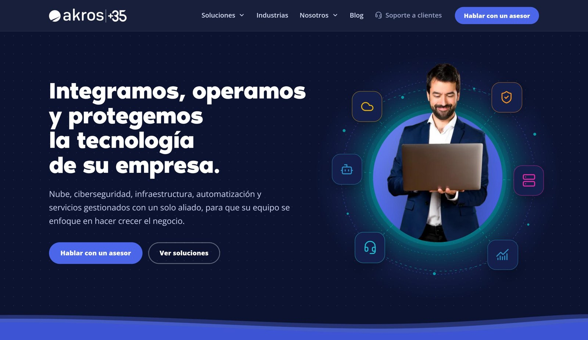
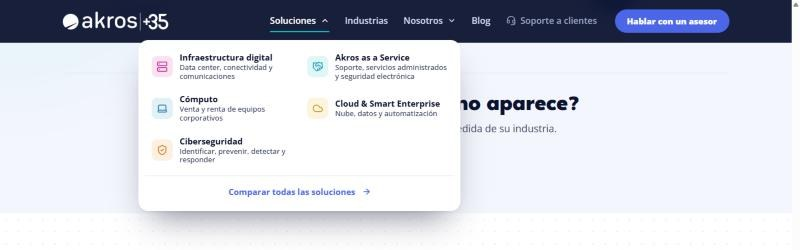
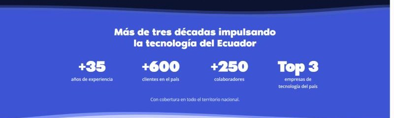
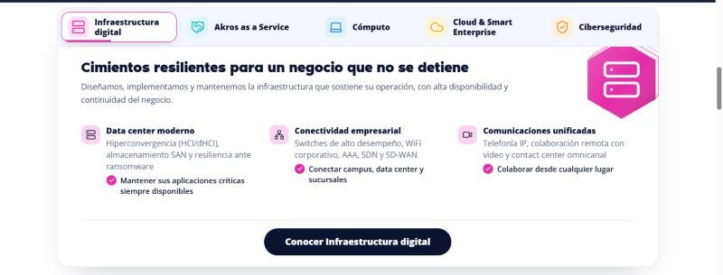
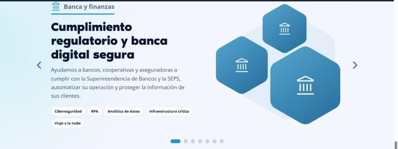
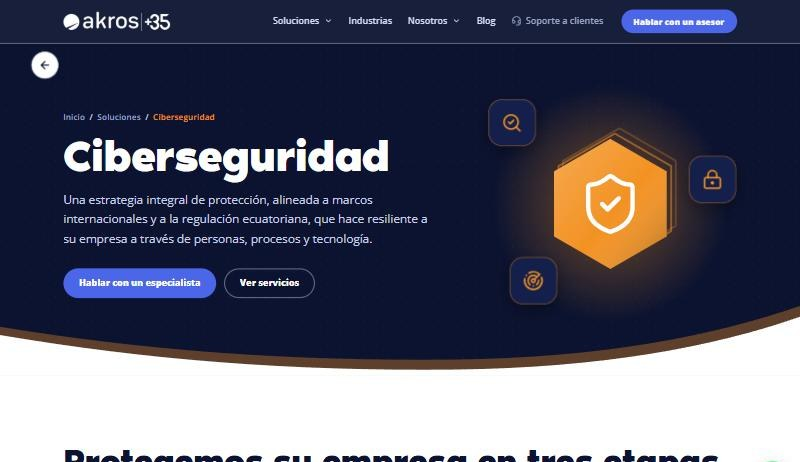
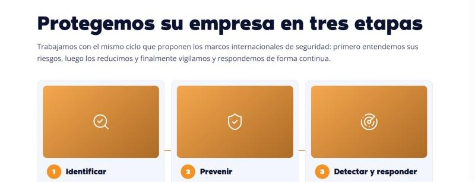
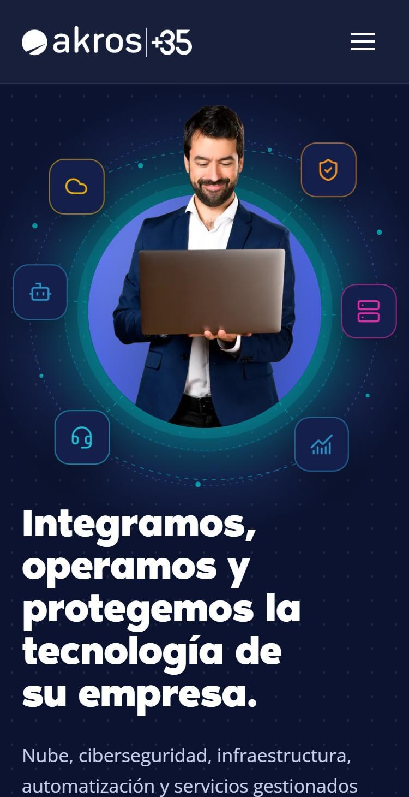
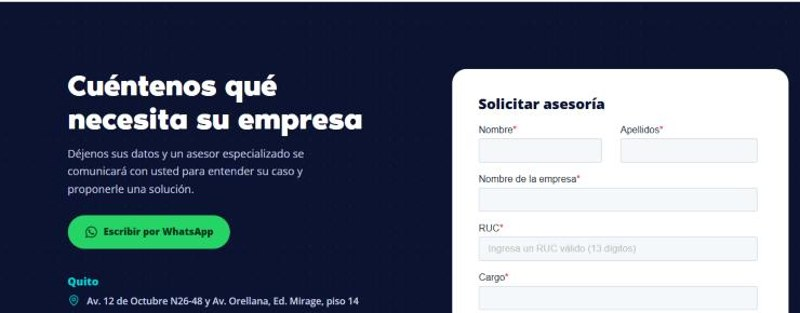

Akros es una de las empresas de tecnología más grandes del Ecuador, con más de 35 años de trayectoria y cinco grandes líneas de negocio: infraestructura, servicios gestionados, cómputo, nube y ciberseguridad. Su sitio tenía mucha información, pero era difícil saber por dónde empezar.
Decidimos rediseñar el sitio desde cero, reutilizando la información existente y respetando su manual de marca, para que un gerente o un responsable de TI entienda en segundos qué hace Akros y llegue rápido a la solución que necesita.
Antes de diseñar, reorganicé el contenido alrededor de las preguntas de un cliente empresarial: ¿qué hacen?, ¿me sirve para mi sector?, ¿puedo confiar en ellos? y ¿cómo los contacto? El resultado es un inicio que responde cada una en orden, y un menú que agrupa el sitio en Soluciones, Industrias, Nosotros y Blog.
Las cinco soluciones se convirtieron en páginas contenedoras, cada una con todo su detalle de servicios, beneficios y casos, y un color propio que las identifica en todo el sitio.

Menú desplegable: cada solución con su color, ícono y una línea que explica qué incluye.
El inicio funciona como un recorrido: un mensaje claro con dos llamadas a la acción, una franja de cifras que generan confianza, los fabricantes con los que trabajan, un explorador de soluciones con pestañas y un carrusel por industria.



Explorador de las cinco soluciones y carrusel de soluciones por industria.
Cada solución tiene su propia página con migas de pan para ubicarse, un encabezado con su color de marca y su contenido organizado para leerse rápido. En Ciberseguridad, por ejemplo, los servicios se explican con un modelo de tres etapas (Identificar, Prevenir, Detectar y responder) y después se detallan en tarjetas que se despliegan.


Todo el sitio lleva a una misma acción: hablar con un asesor. El botón está siempre visible en el menú y el sitio termina con un formulario de asesoría, un acceso directo a WhatsApp y los datos de las oficinas de Quito y Guayaquil.
En el celular, el menú se convierte en un botón de hamburguesa, la ilustración pasa arriba del mensaje y las cifras se ordenan en dos columnas, para que la experiencia sea igual de clara en cualquier pantalla.


Un sitio corporativo moderno que presenta a Akros como lo que es, un aliado tecnológico integral: más claro de recorrer, coherente con su marca y enfocado en convertir visitas en conversaciones con un asesor. El sitio está pensado para publicarse en WordPress, de modo que el equipo de Akros pueda seguir editando su blog.
Ver Sitio en Vivo